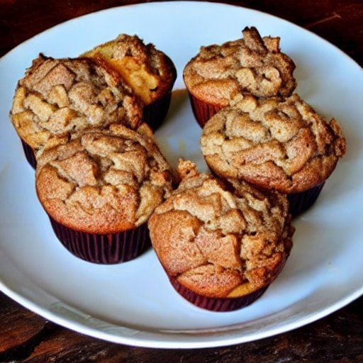

Muffins aux pommes et à la cannelle
Préparation: 15 minutes
Cuisson: 20 minutes
Total: 35 minutes
Ingrédients
-
2 t de farine tout usage

-
1 c. à soupe de poudre à pâte
-
1 c. à thé de cannelle moulue
-
0.5 c. à thé de sel
-
0.5 t de cassonade
-
1 gros oeuf
-
1 t de lait
-
3 c. à soupe de beurre fondu
-
2 pomme
Instructions
Dans un grand bol, tamiser ensemble les ingrédients secs, puis incorporer la cassonade.
- 2 t de farine tout usage
- 1 c. à soupe de poudre à pâte
- 1 c. à thé de cannelle moulue
- 0.5 c. à thé de sel
- 0.5 t de cassonade
Dans un petit bol, battre l'oeuf, puis incorporer au fouet le lait et le beurre.
- 1 gros oeuf
- 1 t de lait
- 3 c. à soupe de beurre fondu
Hacher 1 pomme en petits morceaux et trancher 1 autre pomme en longueurs pas trop épaisses.
Incorporer les ingrédients humides aux ingrédients secs, sans trop les mélanger. Incorporer la pomme hachée.
Remplir aux 2/3 des moules à muffins graissés. Disposer plusieurs tranches de pomme sur chaque muffin.
Cuire au four à 350 °F pendant 18 à 20 minutes.